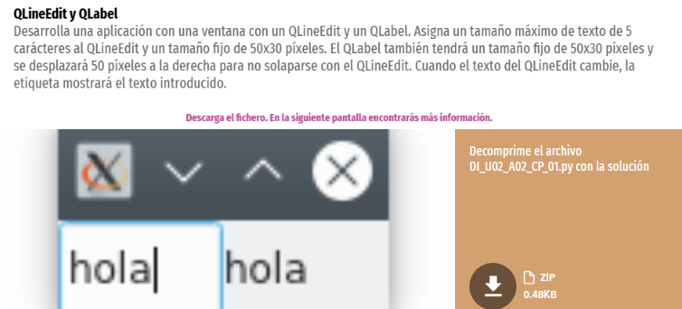
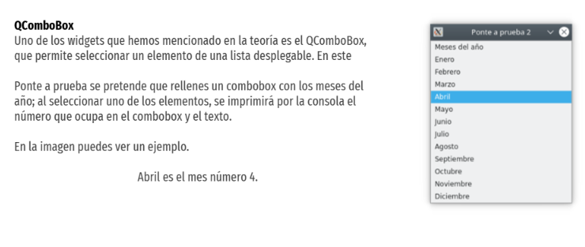

2DAM DI · TareaPYSIDE 1-2 Instrucciones   Documentación de apoyo Documentación de listas en Python Documentación de f-strings en Python Materiales de la tareaNo hay archivos adjuntos en esta tarea.